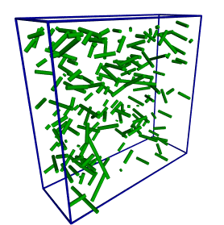
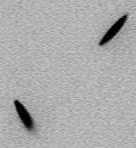
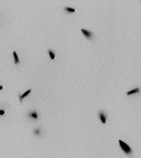

Conventional passive microrheology tracks the thermal (Brownian) fluctuations of spherical tracer particles to infer a material's viscoelastic modulus. A key limitation is that the particle radius must be known precisely to extract the modulus. This project extended the technique to ellipsoidal tracers, exploiting particle asymmetry to remove the need for precise size knowledge.
An ellipsoid undergoes both translational and rotational Brownian motion. Because these two types of fluctuations depend differently on the particle geometry, measuring both simultaneously provides two independent constraints that together determine the viscoelastic modulus — without needing to know the exact particle dimensions. This makes the technique more robust and applicable to situations where calibrating particle size is difficult.
Ellipsoidal tracer particles were synthesized in the laboratory, then injected into viscoelastic fluids and imaged with three-dimensional confocal microscopy. Custom tracking software was developed to follow both the center-of-mass position and the orientation of each particle over time, yielding translational and rotational mean-square displacements.
The animation to the right is a POV-ray rendered cartoon of rod-like particles (modeled after dead bacteria) undergoing 3D Brownian diffusion — illustrating both the translational and rotational degrees of freedom measured in the experiment. View red/blue 3D version ↗

Click to view 3D diffusion animation
The two animations below show actual synthesized ellipsoids diffusing in solution, imaged by confocal microscopy (2D projections). Both translational drift and rotational tumbling are visible. Click either thumbnail to view the full-resolution animation.

Ellipsoid diffusion — sequence 1
(click to enlarge)

Ellipsoid diffusion — sequence 2
(click to enlarge)
Understanding the microrheology of the simplest asymmetric particle (the ellipsoid) provides a foundation for eventually eliminating the need to inject foreign tracer particles into complex biological samples — many of which already contain micron-scale asymmetric inclusions.
{kind=link}
{kind=link}
{kind=link}
{kind=link}